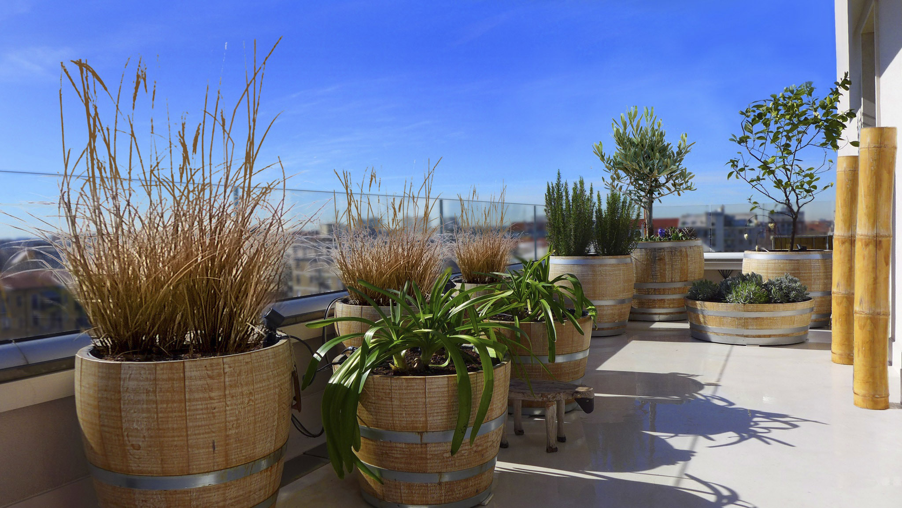

Giardini e parchi
Progettazione di giardini privati, parchi e aree verdi di diverse dimensioni, dal disegno degli spazi alla scelta delle specie vegetali.

Giardini, terrazze, parchi e paesaggi.
Spazi aperti e paesaggi da abitare, per persone, studi e imprese.
Da oltre trent’anni Laura Consorti progetta giardini, terrazze, parchi e spazi verdi per clienti privati e aziende. La sua esperienza comprende la progettazione del verde pensile e l’integrazione della vegetazione nell’architettura, dalla scala del giardino a quella del paesaggio.
Una selezione di fotografie e disegni dall’archivio professionale.
Le immagini sono organizzate per tipologia di intervento. I nomi e le località dei singoli progetti potranno essere aggiunti dopo verifica.
Progettazione e consulenza per spazi verdi privati e aziendali, con attenzione alla qualità dei luoghi e alla loro realizzazione.
Progettazione di giardini privati, parchi e aree verdi di diverse dimensioni, dal disegno degli spazi alla scelta delle specie vegetali.
Progetti per terrazze, coperture verdi e giardini pensili, con una specifica esperienza nei sistemi tecnici e nella vegetazione in copertura.
Progettazione di aree verdi per sedi aziendali e complessi architettonici, anche in collaborazione con studi di architettura e gruppi di progettazione.
Consulenza progettuale, scelta delle piante, definizione delle finiture e direzione lavori, anche per il recupero e la riqualificazione di spazi verdi esistenti.
Architetto paesaggista, specializzata nella progettazione del verde e dei giardini pensili.
Dopo la formazione agraria e gli studi di Architettura al Politecnico di Milano, approfondisce negli anni Novanta i sistemi di verde pensile, con corsi di specializzazione in Germania.
Dal 1987 al 1997 lavora nell’ufficio tecnico del Garden Center Al Seminatore di Milano. Dal 1997 svolge la libera professione, realizzando interventi in Italia e all’estero.
Nel suo percorso professionale ha collaborato a interventi con studi quali Renzo Piano Building Workshop, Gregotti Associati, Cerri Associati e Polis Engineering. Ha svolto attività didattica e contribuito alla diffusione delle conoscenze tecniche sulle coperture verdi.
Articoli, libri, interventi e attività di formazione dedicati all’architettura del paesaggio.
Giardini Pensili (2003), con Paolo Abram.
Verde pensile in Italia e in Europa (2006), con Paolo Abram.
Ha svolto docenze e conferenze presso il Politecnico di Milano, IED, NABA e scuole specializzate nel verde pensile. Ha partecipato ai lavori per il Codice di Pratica UNI sulle coperture continue a verde.
Per progetti di giardini, terrazze, verde pensile, parchi e spazi verdi aziendali, o per collaborazioni professionali.
laura.consorti@gmail.com